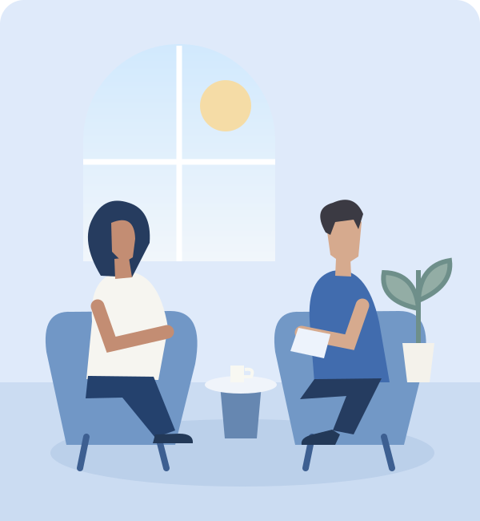

Расскажите о предпочтениях
Тема, бюджет и удобное время. Не нужно разбираться в названиях подходов.
Психолог ближе, чем кажется
Подбор психолога для онлайн-встреч.
Начните с короткой анкеты — мы поможем
сориентироваться в выборе.
Подбор без регистрации · видеовстречи
Вы психолог? Присоединиться ↗
С чем можно начать
Выберите тему — начнём анкету с неё. Ответ можно изменить.
01 Ваши предпочтения важны
02 Понятный выбор без спешки
03 Решение остаётся за вами
Как это работает
Тема, бюджет и удобное время. Не нужно разбираться в названиях подходов.
Посмотрите профили и объяснение, почему они появились в рекомендациях.
Создайте кабинет и отправьте заявку. Психолог подтвердит её вручную или автоматически.
Пять вопросов. Начать можно без готового запроса.
Для специалистов
Расскажите о себе и своей практике.
Мы рассмотрим анкету, а после одобрения
вы сможете добавить время для встреч.
Сейчас доступна локальная проверка регистрации и заявки.
Можно спросить
В анкете можно выбрать «Пока не знаю». Для знакомства с сервисом не нужно заранее формулировать проблему.
В прототипе мы сопоставляем выбранную тему, бюджет и предпочтение пола с демонстрационными профилями. Это подбор по предпочтениям, а не оценка состояния или гарантия результата.
В локальной версии можно сохранить запись и получить подтверждение психолога. Оплата и видеосвязь ещё не подключены; публичный приём пользователей пока не открыт.
Ответы сохраняются в этой вкладке для продолжения записи после входа. Текст анкеты не передаётся психологу при бронировании. Сторонняя аналитика не подключена.
Когда будете готовы
Необязательно находить правильные слова.
В анкете можно выбрать «Пока не знаю».
Подбор без регистрации